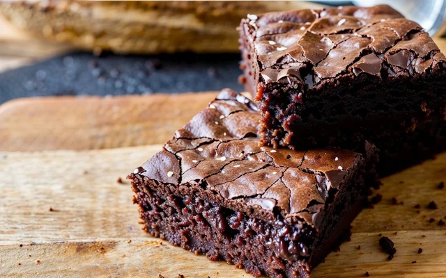

• Miojo Turbinado
• Ingredientes
• Modo de preparo
- Numa frigideira com borda alta coloque a agua e o miojo inteiro, após a água ter dado uma reduzida
coloque o extrato misture, logo após a manteiga e o requeijão deixe no fogo ate que reste pouca água, então
coloque a carne, sirva o miojo num prato e jogue queijo parmesão por cima.
• Brownie
